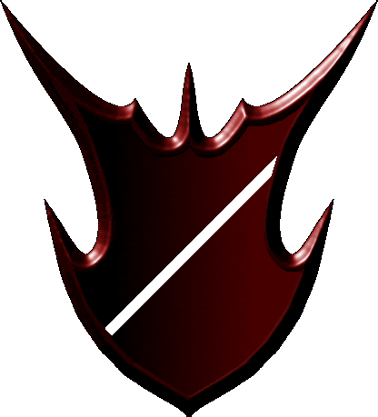

| Übersicht,
Alltägliches und Lokales (RPG) |
|
Erntemondfest - Segelregatta (11  ) )
|
Elániel Vanyië
 |

((Ablauf wie gehabt: Startsignal im Regiochat in Aerlinn, dann erfolgt die erste GS-Übergabe. Die Streckenposten stehen wie gehabt ein Feld neben/vor dem Anleger. Sobald man die Insel erreicht erfolgt zuerst die GS-Übergabe und dann das Lösen der Aufgaben. Die Aufgaben werden kurz vor dem Start dem Kapitän der Mannschaft bekannt gegeben. Wir machen es diesmal ein wenig spannend. ;o) Keine Sorge, die Aufgaben sind wiedermal für jeden lösbar. Falls es noch Fragen gibt, einfach an Titania oder mich wenden. Wer gerne als Streckenposten mithelfen möchte, der möge mir bitte schreiben.))
Baronesse Ella von Dahén,
Vorsteherin von Dùn Thuatail,
Kardinälin im Dienste des einzig wahren Glaubens an Wendaria,
Ehefrau des ehrenwerten Zipfelmütz von Dahén
Zur 9. Stunde am 66.Erntemond im Jahre 435 |
25.11.08 11:57
|
|
Zipfelmütz von Dahén
 |
Na sicher bin ich wieder dabei. :) Muss nur noch meine Mannschaft zusammenstellen.
Pfalzgraf Zipfelmütz von Dahén,
Vorsteher von Lois Thuatail,
Ehemann der reizenden Ella von Dahén,
Siegerteam der 2. Segelregatta
Zur 14. Stunde am 70.Erntemond im Jahre 435 |
26.11.08 11:38
|
|
Elániel Vanyië
|
((da ich mehrmals gefragt wurde: RL Zeit ist So, 30.11. 20h ;o) ))
Baronesse Ella von Dahén,
Vorsteherin von Dùn Thuatail,
Kardinälin im Dienste des einzig wahren Glaubens an Wendaria,
Ehefrau des ehrenwerten Zipfelmütz von Dahén
Zur 4. Stunde am 71.Erntemond im Jahre 435 |
26.11.08 14:51
|
|
Belálith Elriond
 |
-= ANMELDUNG ZUR 3. SEGELREGATTA =-
Teamname: Dreier Flotte
Teamfarben: Weiß-Weinrot
Aufstellung:
Fáin Cortez Kapitän.
Belálith Elriond 1. Maat.
Wynne Wynne, oder die hübscheste Galionsfigur, die es je gab.
Belálith Elriond
Zur 15. Stunde am 71.Erntemond im Jahre 435 |
26.11.08 17:16
|
|
Dorinda Sculterius
 |
nun, daß das AiR wieder antreten wird ist wohl selbstverständlich, wir beraten nur noch ein wenig über die Besetzung.
Da ich meinen Nationsmitgliedern soviel über die Kochkünste deiner Halblingsdame Seidenhuhn erzählt habe, drängeln sich dieselben teilnehmen zu dürfen und womöglich wird es sogar ein 2tes Team geben.
Ich hab doch nicht zuviel versprochen und deine Frau Seidenhuhn kocht noch für dich und ist für das anschließende Fest zuständig oder?
Baronesse Dorinda Sculterius,
Vorsteherin von Neo Draconis,
Verlobte des ehrenwerten Soerver
Zur 21. Stunde am 72.Erntemond im Jahre 435 |
27.11.08 0:19
|
|
| Falster von Distelflamme (RIP) |
Werte Baronesse Sculterius,
ich nehme nicht an das die von euch angesprochene Frau Seidenhuhn, eine Bedienstete der Baronesse Ella von Dahén, in Küstenbrise bei den Feierlichkeiten als Köchin verantwortlich zeichnet. Dies wäre ja eher abstrus!
Da werdet ihr leider entäuscht, wenn ihr jedoch die Kost auf dem traditionellen Erntemondfest in Küstenbrise, welches seit zahllosen Jahren dort zelebriert wird nicht schätzt, so gäbe es vielleicht an Bord des Schiffes der werten Baronesse von Dahén in der Kombüse etwas das Frau Seidenhuhn eich vorbereiten könnte.
König Falster von Distelflamme,
Vorsteher von Aerlinn,
Si vis pacem para bellum,
Guth an Curadh,
Ehemann der reizenden Titania von Distelflamme,
Zweitplatziertes Team der 2. Segelregatta
Zur 21. Stunde am 73.Erntemond im Jahre 435 |
27.11.08 6:01
|
|
| Kihoko Nagashi (RIP) |
= ANMELDUNG ZUR 3. SEGELREGATTA =-
Schiffsname: Escalgor
Teamfarben: Blau-Silber
Aufstellung:
Kihoko Nagashi Kapitän
Bongo Sensi - Erzmagus
Jolina - Heilerin
Baronesse Kihoko Nagashi,
Vorsteherin von Rosaleda,
Drittplatziertes Team der 2. Segelregatta
Zur 1. Stunde am 76.Erntemond im Jahre 435 |
27.11.08 18:04
|
|
Dorinda Sculterius
|
nun so abwegig ist dies wohl nicht wenn Ella als Veranstalterin der Regatta ihre Köchin für das anschließende Fest zu Ehren Wendarias zur Verfügung stellt. Mein Eindruck ist eure Gattin Titania und Ella sind die besten Busenfreundinnen und planen Regatta und anschließendes Fest gemeinsam.
Daß dabei was gutes rauskommt und wir wohl viel Spaß und Spannung zu erwarten haben, haben beide ja schon bei bisherigen Festlichen Aktionen bewiesen!
Nun, was unsere Teamaufstellung betrifft: ein 2tes Team wird es vorrausssichtlich doch nicht geben da manche Teaminteressierten aufgrund anderer Verpflichtungen nicht den Termin wahrnehmen können.
Aber wo bleibt überhaupt die Konkurrenz? Einer Regatta mit nur 2 Teams fehlt wohl der Biss und die Herausforderung! Das AiR-Team hätte gerne min. 5 Konkurrenten!
*geht mal nen bisserl Werbung unter befreundeten Nationen machen*
Baronesse Dorinda Sculterius,
Vorsteherin von Neo Draconis,
Verlobte des ehrenwerten Soerver
Zur 16. Stunde am 76.Erntemond im Jahre 435 |
27.11.08 21:30
|
|
| Titania von Distelflamme (RIP) |
Aus wichtigen Gründen muss ich darauf hinweisen das die Regatta sowie die Festlichkeiten um einige Zeit vorgezogen werden müssen.
((Um 19 Uhr beginn statt 20 Uhr))
Königin Titania von Distelflamme,
Vorsteherin von Küstenbrise,
Ehefrau des ehrenwerten Falster von Distelflamme,
Guth an Príadh
Zur 8. Stunde am 80.Erntemond im Jahre 435 |
28.11.08 18:11
|
|
| Eilis v. glänzenen Wolfstern (RIP) |
Traurig schaut Eilis von ihrem Rollstuhl auf und betrachtet den Aushang. Dabei murmelt sie leise:
"Schade, diesmal kann ich nicht teilnehmen."
Barghan, der stämmige Krieger ihrer Leibgarde, legt ihr sanft eine Hand auf die Schulter und flüstert:
Aber vielleicht im nächsten Jahr. Du wirst sehen...bestimmt.
Nur Augenblicke später sieht man beide im Auktionshaus verschwinden.
Eilis Fraech,
Vorsteherin von Lindisfårne
Zur 15. Stunde am 80.Erntemond im Jahre 435 |
28.11.08 19:40
|
|
| Kihoko Nagashi (RIP) |
Teamänderung: Statt Jolina fährt Vetinari wieder mit.
Baronesse Kihoko Nagashi,
Vorsteherin von Rosaleda,
Drittplatziertes Team der 2. Segelregatta
Zur 4. Stunde am 85.Erntemond im Jahre 435 |
29.11.08 21:15
|
|
| Calenleya valvawyn (RIP) |
-= ANMELDUNG ZUR 3. SEGELREGATTA =-
Schiffsname: Luxuswrack
Teamfarben: Rot-Schwarz
Aufstellung:
Calenleya valvawyn Kapitän
Erin ó Súilleabháin - 1. Maat
Bluemchen - schrubbt das Deck
Calenleya valvawyn,
Kardinälin im Dienste des einzig wahren Glaubens an Tura
Zur 14. Stunde am 85.Erntemond im Jahre 435 |
29.11.08 23:31
|
|
| Bluemchen (RIP) |
Ja, man soll nicht soviel von dem sehr starken Bier trinken und sich danach zu seltsamen Dingen verpflichten...
Bluemchen,
Hohepriester im Dienste des einzig wahren Glaubens an Pheron,
Ehemann der reizenden Goldenes,
Träger der mächtigen Axt des Krolltok,
Legionär Pherons,
Der dem Ulfhednir sein Spielzeug kaputtgemacht hat
Zur 4. Stunde am 87.Erntemond im Jahre 435 |
30.11.08 8:21
|
|
Zipfelmütz von Dahén
|
-= ANMELDUNG ZUR 3. SEGELREGATTA =-
Schiffsname: Sinuel von Dahén
Teamfarben: Blau-Schwarz
Aufstellung:
Bibi Biberzahn
Dubliner
Zipfelmützvon Dahén (Kapitän)
Pfalzgraf Zipfelmütz von Dahén,
Vorsteher von Lois Thuatail,
Ehemann der reizenden Ella von Dahén,
Siegerteam der 2. Segelregatta
Zur 17. Stunde am 87.Erntemond im Jahre 435 |
30.11.08 11:28
|
|
| Durion Eilistraee (RIP) |
Anmeldung zur 3. Segelregatta
Schiffsname: Loch im Bug
Teamfarben: Gelb-Schwarz
Aufstellung:
Ibn de Witt (Kapitän)
Durion Eilistraee (Teekocher)
Grace ti Annuan (Irgendwas, findet sich noch)
Markgraf Durion Eilistraee,
Vorsteher von Esturia Draconis,
Ehemann der reizenden Alessa Imret Eilistraee,
Gaias Geschenk an die Frauen,
Oberst des Reiterregiments "Falkensturm"
Zur 7. Stunde am 88.Erntemond im Jahre 435 |
30.11.08 14:50
|
|
| Titania von Distelflamme (RIP) |
-= ANMELDUNG ZUR 3. SEGELREGATTA =-
Teamname: "Al Fati"
Teamfarben: Schwarz-Blutrot
Aufstellung:
Falster von Distelflamme Kapitän.
Titania von Distelflamme Kapitäns Ehefrau.
Alessa Imret Eilistraee Kapitäns Schwägerin.
Königin Titania von Distelflamme,
Vorsteherin von Küstenbrise,
Ehefrau des ehrenwerten Falster von Distelflamme,
Guth an Príadh
Zur 11. Stunde am 88.Erntemond im Jahre 435 |
30.11.08 15:40
|
|
Elániel Vanyië
|
((noachmal zur Erinnerung: Regatta beginnt um 19h! Startsignal im Regiochat, um es ein letztes Mal zu erwähnen ;o)
Regatta und Fest im IRC: #Küstenbrise))
Baronesse Ella von Dahén,
Vorsteherin von Dùn Thuatail,
Kardinälin im Dienste des einzig wahren Glaubens an Wendaria,
Ehefrau des ehrenwerten Zipfelmütz von Dahén
Zur 23. Stunde am 88.Erntemond im Jahre 435 |
30.11.08 18:20
|
|
Turiandor Dragus
 |
*guckt skeptisch*
Die Veranstalterin nimmt an Ihrer eigenen Regatta teil, bei der sie womöglich die Aufgaben selber gestellt hat... Merkwürdig, Merkwürdig.
Herzog Turiandor Dragus,
Vorsteher von Quo Veheris,
Kriegsminister
Zur 24. Stunde am 88.Erntemond im Jahre 435 |
30.11.08 18:36
|
|
Alessa Imret Eilistraee
 |
Keine Hetze, werter Dragus...
Freifrau Alessa Imret Eilistraee,
Vorsteherin von Rogalis,
Herrin verdammter Seelen,
Geliebte des martialischen Takehiko,
Ehefrau des ehrenwerten Durion Eilistraee
Zur 24. Stunde am 88.Erntemond im Jahre 435 |
30.11.08 18:42
|
|
| Ibn de Witt (RIP) |
Nun, keine Sorge werter Herzog. Es wird euch sicherlich völlig überraschen, wer diese Regatta gewonnen hat.
Schiebung! SCHIEBUNG !!!
Graf Ibn de Witt,
Vorsteher von Esturia Vectris,
Teilnehmer an der 3. Segelregatta
Zur 7. Stunde am 89.Erntemond im Jahre 435 |
30.11.08 20:20
|
|
| Falster von Distelflamme (RIP) |
Werter Herzog und werter Graf, ich kann besten Gewissens dafür gewähren das meine Frau die Königin des Haines sich durch ihre Rolle als Gastgeberin und die Beteiligung an der Organisation keinerlei Vorteile erschlichen hatt.
Dafür bürge ich mit meinem Namen, der zwar von manchen in den Schmuz gezogen wird, wohl aber in sachen dieser Art unbefleckt ist.
König Falster von Distelflamme,
Vorsteher von Aerlinn,
Si vis pacem para bellum,
Guth an Curadh,
Ehemann der reizenden Titania von Distelflamme,
Zweitplatziertes Team der 2. Segelregatta,
Siegerteam der 3. Segelregatta
Zur 10. Stunde am 89.Erntemond im Jahre 435 |
30.11.08 20:58
|
|
Elániel Vanyië
|
*Ellas Sekretär nähert sich dem Anschlagsbrett und nagelt mit einem kleinen Hämmerchen ein Schreiben fest*
Platzierungen der 3. Segelregatta:
1. Platz - Mannschaft "Al Fati"
2. Platz - Mannschaft Dreier Flotte
3. Platz - Mannschaft des Schiffes "Sinuel von Dahén
4. Platz - Mannschaft des Schiffes "Escalgor"
5. Platz - Mannschaft des Schiffes "Luxuswrack"
6. Platz - Mannschaft des Schiffes "Loch im Bug"
Ich bedanke mich bei allen Teilnehmern und hoffe, dass sich beim nächsten Bewerb ebenfalls genug Mannschaften am Start einfinden. Abschließend möchte ich darauf hinweisen, dass sämtliche Teilnehmer im Vorfeld die gleichen Informationen von meiner Seite aus erhalten habe. Ich glaube, es wäre sowohl für mich, als auch für die Regatta alles andere als dienlich, wenn es Ungereimtheiten gäbe.
gez.
Baronesse Ella von Dahén,
Vorsteherin von Dùn Thuatail,
Kardinälin im Dienste des einzig wahren Glaubens an Wendaria,
Ehefrau des ehrenwerten Zipfelmütz von Dahén
Zur 13. Stunde am 89.Erntemond im Jahre 435 |
30.11.08 21:37
|
|
| Titania von Distelflamme (RIP) |
Die Aufgaben wurden einzig von Ella gestellt, meine Rolle war eher die der Schirmherrschaft bei dieser Regatta, seid also unbesorgt.
Ebenfalls möchte ich mich bei den Teilnehmern und Organisatoren der Regatta bedanken die wieder für ein außergewöhnliches Ereignis gesorgt haben.
Mein besonderer Dank gilt auch dieses mal Ella von Dahén.
Königin Titania von Distelflamme,
Vorsteherin von Küstenbrise,
Ehefrau des ehrenwerten Falster von Distelflamme,
Guth an Príadh,
Siegerteam der 3. Segelregatta
Zur 14. Stunde am 89.Erntemond im Jahre 435 |
30.11.08 22:03
|
|
Zipfelmütz von Dahén
|
Von mir auch nochmal ein Dankeschön an die Veranstalter(in). Hat wie immer Spaß gemacht und freue mich auf die nächste Regatta, bei der wir uns den Titel sicher wieder zurückholen werden. ;) Glückwunsch an König Falster und Fain für die ersten beiden Plätze!
Fürst Zipfelmütz von Dahén,
Vorsteher von Lois Thuatail,
Ehemann der reizenden Ella von Dahén,
Siegerteam der 2. Segelregatta,
Drittplatziertes Team der 3. Segelregatta
Zur 21. Stunde am 1.Dunkelfrost im Jahre 435 |
01.12.08 10:49
|
|
Grace
 |
Der nächste Titel wird an das Team "Grüne Socken" gehen .. *schonmal Bescheid geb*...
Der Cäp gestern hatte eindeutig zuviel Rum konsumiert .. *Ibn schief anschaut*
Lady Grace Ti Annuan,
Verlobte des ehrenwerten Marlandi in Marcovil,
Teilnehmer an der 3. Segelregatta
Zur 13. Stunde am 2.Dunkelfrost im Jahre 435 |
01.12.08 14:24
|
|
Übersicht,
Alltägliches und Lokales (RPG)
|